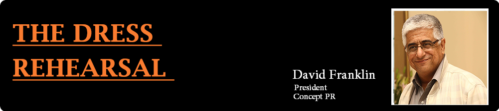

The importance of the capital markets is best understood by promoters of companies who are first timers in raising capital through IPO’s. There are broadly three types of categories of companies in terms of their size namely large, medium and small where the amount of capital being raised would be over Rs. 500 Crs in the large; between 100-500Crs in the medium and below 100 Crs in the small category. The first time entrepreneur tapping the markets interacts with a completely new set of people and community – namely the investor, broker, media and analyst. To make him understand, communicate and get his message across to this section effectively, PR teams conduct ‘mock’ sessions or ‘dress rehearsals’.
The basis of raising money for an IPO is through a document known as the RHP (Red Herring Prospectus). The very first section in the same states the ‘risk factors’ which enumerate various acts of the company, legal issues, past doings and undoings and also potential threats and concerns to the business. In short it is nothing less than a Pandora’s Box and for the uninitiated management teams, this could be a big stumbling block. At any road show the invitees to the conferences get a copy of the RHP when they walk in and on turning the first page itself the risk factors hit them straight in the face prompting immediate questions. The capital market community as any other community intimidates and hackles a person who is unable to answer questions suitably.
When I started conducting mock sessions, promoters would ask what happens in these sessions and the general impression was that it is an exercise which is part of the IPO process in reality it is more than that simply because it creates the mood which gets generated during a road show.
A mock session covers the various parts of the document and makes the entrepreneur and more importantly the team that would be on the dais and present during the road show, aware of the do’s and don’ts to be followed while facing media representatives. It covers the questions that could and would be asked and prepares the team with answers that should be given for the same. Historical facts like the risks stated cannot be erased but if answered appropriately become a positive strength. Further the important point to be made is the honest approach of the first time raiser of capital and the genuineness of the promoter and his company.
Some of the important areas of the RHP from where questions come are the risk factors which concern the past and the future. The objects of the issue see questions about other corporate purposes, money set aside for acquisitions, non-capacity related allocation of resources and timing of completion of projects. The business segment sees questions about the business, competition, growth in the sector, margins, sustainability of margins even queries on why margins suddenly improve or revenues jump just prior to the issue’s launch. The comparison of business mix, revenues and margins with that of the competitor is normally a well debated topic in the Mumbai meet where the analyst community is present. On the financials, questions pertaining to various ratios, growth, debt, interest cost, on whether the company is involved in foreign trade, hedging mechanism, raw material purchase policy, inventory levels and debtor days are frequently asked.
It is very important that the various people representing the company along with the promoter are seen as speaking the same language. The message that goes out should be loud and clear and the entire team should be seen as talking on the same wavelength. Further it becomes very imperative that the questions being addressed should be divided by the people on the dais in terms of area of operation. For example the CFO addresses finance related questions and typically the promoter talks about vision, growth and the way forward.
The most important part of the session and the one which takes the longest in terms of time relates to the justification of whatever price is being asked for and what is the rationale for the price and also the justification of valuations. A key area is the comparison with others in the business segment because that gives a fair idea of valuation. A proper and justifiable answer to this question ensures that the battle is won
An interesting area of discussion is when promoters talk about future prospects. Unfortunately regulators do not permit the same. So, how does one resolve this issue? The mock session trains the team to achieve the same by focusing on capacity, capacity utilization and growth in capacity. Thereby trying to convey a sense of growth, which could be achieved in the future. This becomes easy as capacity and capacity utilization are normally mentioned in the RHP and anything mentioned in that is the gospel truth and can be discussed.
What does this entire exercise achieve? It brings about the confidence in the team who is presenting their company to investors and in the process confident replies makes investors not only convinced but brings about a higher degree of confidence in the management.
For me, personally, hearing a sigh of relief from the promoter thanking God that this was a private session, is the ultimate sign of success!